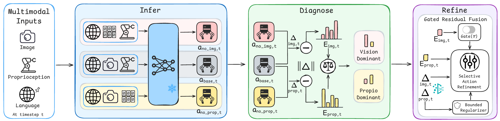
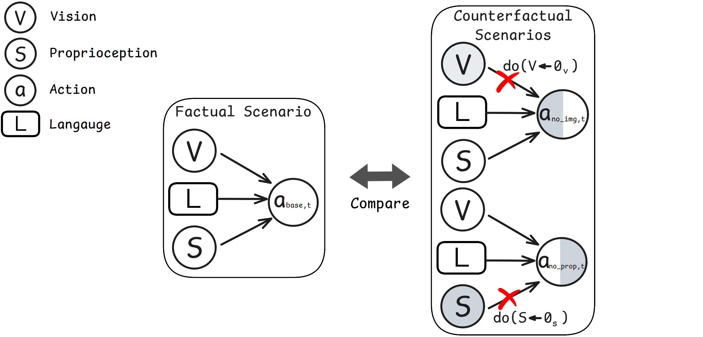
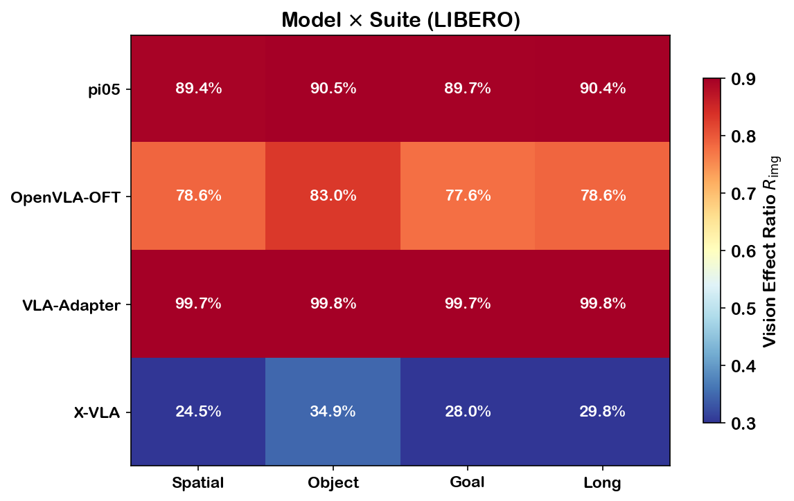
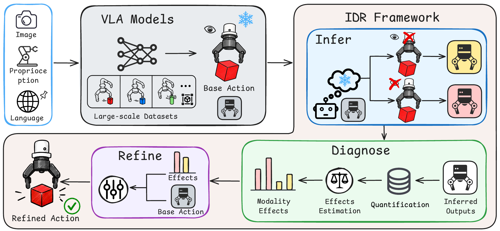
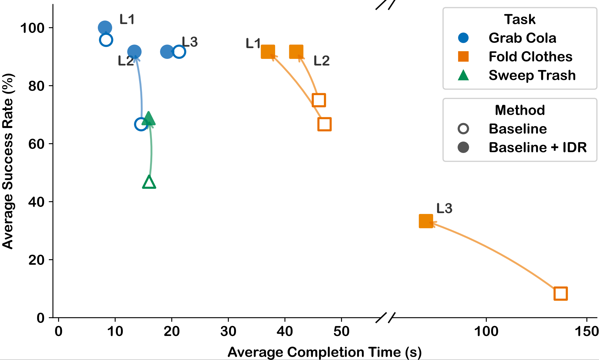
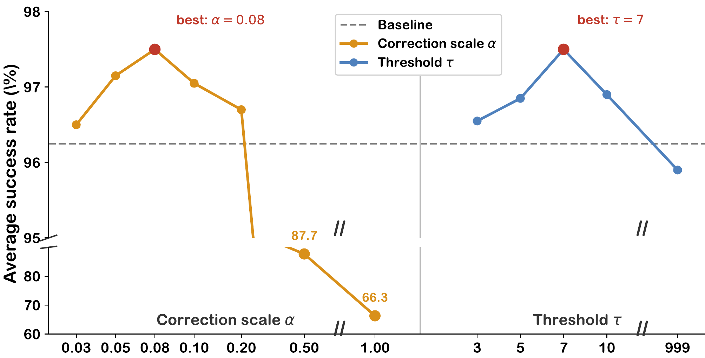

Abstract
Vision-language-action (VLA) models predict sequential actions to execute tasks specified by language instructions, conditioned on visual observations and proprioceptive states. However, existing models typically perform static multi-modal fusion across all inputs for action generation, overlooking the varying importance of visual observations during the dynamic execution process.
In this paper, we propose an Infer-Diagnose-Refine (IDR) framework, a model-agnostic paradigm that can be seamlessly integrated with any VLA model at test time. IDR first infers actions under factual and counterfactual scenarios of visual observations, and then diagnoses the causal effects of visual observations as the estimated dynamic importance, which is finally used to refine the initial action predictions in a training-free manner. Extensive experiments on both simulation benchmarks and real-world tasks yield consistent performance gains across multiple VLA models.
Method Overview

IDR Framework Architecture: Zero-padding interventions for counterfactual inference, norm-based effect quantification, and gated residual fusion.
Key Components
Infer: IDR constructs counterfactual inputs through zero-padding interventions, enabling the frozen VLA model to infer factual and counterfactual outputs under different modality conditions.
Diagnose: The changes of outputs are quantified with a norm-based effect measurement to diagnose the dynamic importance of visual observations.
Refine: The diagnosed effects are integrated with the initial action prediction through gated residual fusion, producing a refined action while preserving low-level control stability.
Causal Analysis

Causal graph illustrating the modality intervention framework.
IDR treats visual importance as a dynamic factor during execution, diagnoses how visual observations causally affect the current prediction, and refines the action accordingly.
Observation 1: Modality Contribution Analysis

Vision effect ratio across different VLA models and task suites in LIBERO. Counterfactual interventions reveal distinct modality-reliance regimes across representative VLA backbones.
Observation 2: Phase-dependent Modality Importance

Visual importance varies across different execution phases (Locate, Approach, Grasp, Transport, Place), suggesting the need for dynamic, phase-aware modality adaptation.
Observation 3: Architecture-specific Modality Patterns
Different VLA architectures exhibit distinct reliance patterns:
- OpenVLA-OFT: High vision reliance, stable across tasks
- π0.5: Balanced vision-proprioception, task-dependent variations
- X-VLA: Proprioception-dominant with context-sensitive vision use
- VLA-Adapter: Adaptive switching between modalities
Simulation Benchmark Results
LIBERO Benchmark
IDR consistently improves reproduced baselines across four VLA backbones on LIBERO benchmark.
| Backbone | Spatial | Object | Goal | Long | Average |
|---|---|---|---|---|---|
| OpenVLA-OFT | 92.60% | 99.20% | 96.20% | 94.60% | 95.65% |
| +IDR | 94.20% | 99.20% | 98.00% | 94.80% | 96.55% (+0.90%) |
| π0.5 | 97.50% | 95.00% | 97.00% | 95.50% | 96.25% |
| +IDR | 98.00% | 100.00% | 97.00% | 95.00% | 97.50% (+1.25%) |
| X-VLA | 92.60% | 99.20% | 98.00% | 94.40% | 96.05% |
| +IDR | 95.00% | 100.00% | 93.00% | 93.00% | 96.50% (+0.45%) |
| VLA-Adapter | 94.20% | 95.60% | 98.00% | 92.60% | 95.10% |
| +IDR | 97.00% | 100.00% | 96.00% | 94.00% | 96.50% (+1.40%) |
CALVIN Benchmark
| Method | Average Task Length | Improvement |
|---|---|---|
| Baseline | 4.22 | — |
| +IDR | 4.44 | +0.22 (+5.2%) |
Simpler Benchmark
| Robot | Baseline | +IDR | Improvement |
|---|---|---|---|
| Simpler VA | 75.88% | 78.90% | +3.02% |
| Simpler VM | 81.15% | 82.13% | +0.98% |
| Simpler WidowX | 93.75% | 95.83% | +2.08% |
Real-World Experiment Results

Real-world experiments on pick-and-place, deformable object manipulation, and long-horizon desk organization tasks.
Organize Table: Multi-step Manipulation Results
| Task Level | Baseline (steps) | +IDR (steps) | Improvement |
|---|---|---|---|
| Level 1 (2 steps) | 2.0 avg | 2.0 avg | — |
| Level 2 (3 steps) | 2.5 avg | 2.8 avg | +12% |
| Level 3 (4 steps) | 2.3 avg | 4.0 avg | +74% |
Detailed Real-World Task Performance
| Task | Baseline | +IDR | Improvement | Time Reduction |
|---|---|---|---|---|
| Grab Cola L1 | 95.8% | 100% | +4.2% | 8.4s → 8.2s |
| Grab Cola L2 | 66.7% | 91.7% | +25.0% | 14.6s → 13.4s |
| Fold Clothes L1 | 66.7% | 91.7% | +25.0% | 47s → 37s |
| Fold Clothes L2 | 75.0% | 91.7% | +16.7% | 46s → 42s |
| Fold Clothes L3 | 8.3% | 33.3% | +25.0% | 222s → 155s |
| Sweep Trash | 46.9% | 68.8% | +21.9% | 16.0s → 15.9s |
Ablation Studies
Hyperparameter Sensitivity

Moderate correction scales and intervention thresholds yield the best performance on π0.5 + LIBERO.
Phase-dependent Intervention

Selective intervention during motion-transition phases yields better performance than uniform intervention.
IDR shows that selective intervention during motion-transition phases (grasp, place) yields better performance than uniform intervention across all phases. This supports the need for dynamic, phase-aware modality adaptation.